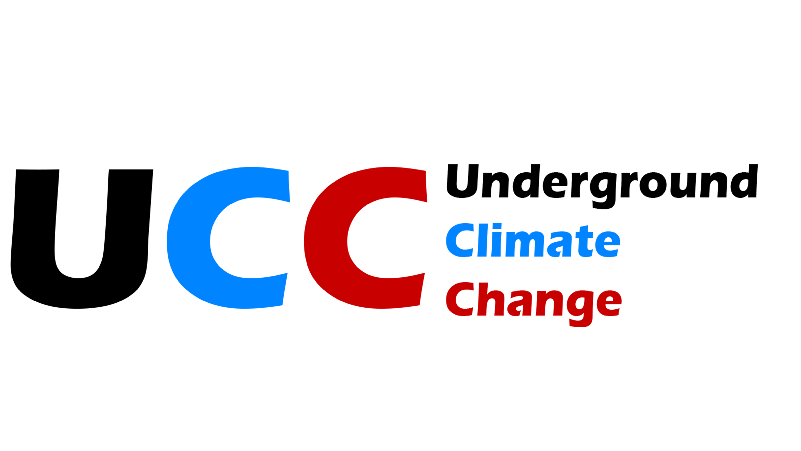

Caricamento stazioni in corso...
ℹ️
Underground Climate Change
Rete nazionale di monitoraggio microclimatico in grotta
Totale stazioni: 18
Clicca sui marker per visualizzare i dettagli delle stazioni
